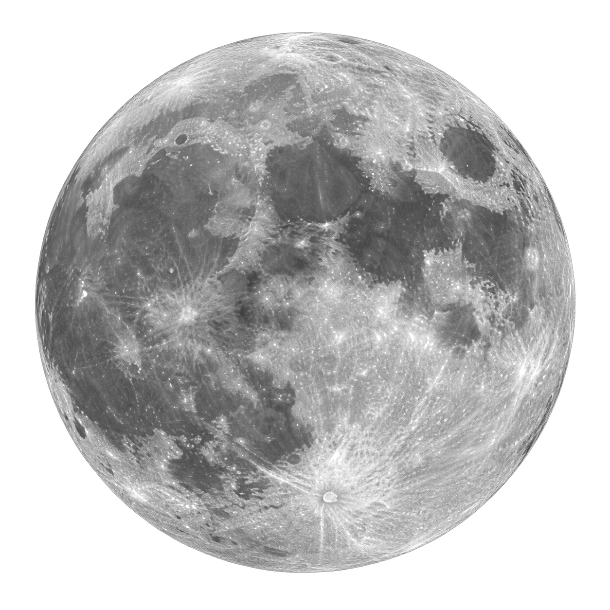
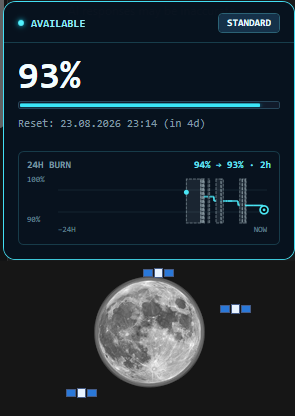

Ten lunar states
The moon wanes in clear 10% steps, so quota health is readable without opening a dashboard.
A tiny, private desktop companion that turns your remaining Codex quota into a living moon — always visible, never distracting.

Quota Wisp maps the live percentage reported by Codex to ten distinct lunar states. Move the slider to preview the experience.
Hover over the moon for a precise digital panel: current quota, reset countdown, speed mode and a local 24-hour burn chart.

The moon wanes in clear 10% steps, so quota health is readable without opening a dashboard.
A 24-hour burn chart with reset markers and connection gaps, stored only on your machine.
Always-on-top, click-through mode, fullscreen hiding and three carefully tuned sizes.
Reads structured rate-limit data from your local Codex App Server. No account tokens leave your computer.
Self-contained for Windows 11 x64. Extract, launch, and let the moon find your local Codex installation.